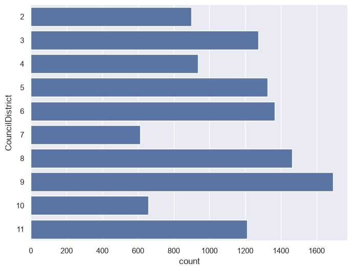
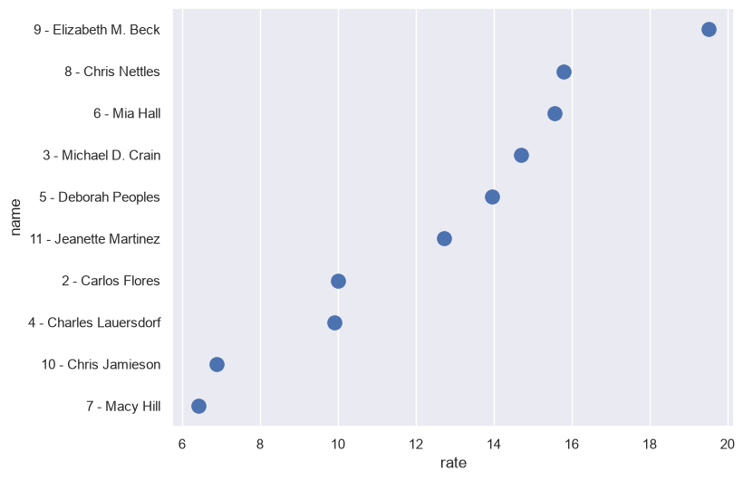
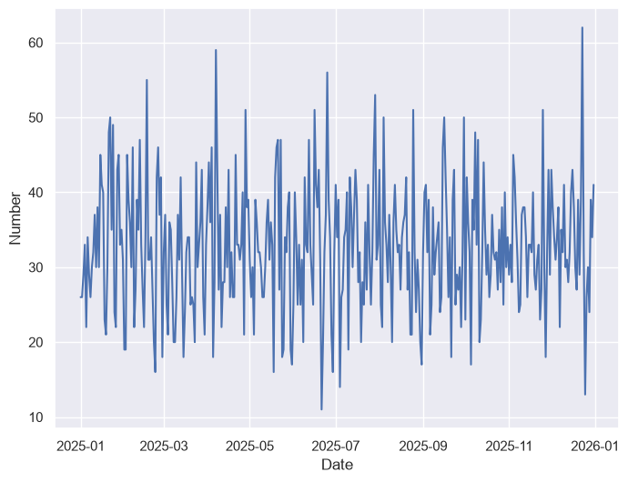
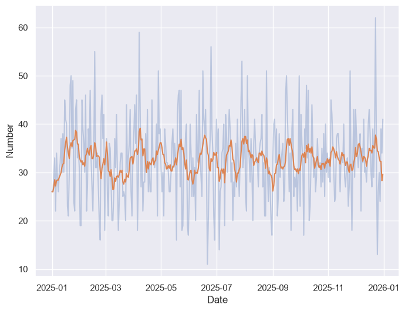

from IPython.display import IFrame
IFrame("https://services5.arcgis.com/3ddLCBXe1bRt7mzj/arcgis/rest/services/CFW_Open_Data_Police_Crime_Data_Table_view/FeatureServer/0/query?where=Case_No%3D%27250090795%27&outFields=Case_No,Reported_Date,Nature_Of_Call,BLOCK_ADDRESS,CouncilDistrict&f=pjson", width = 700, height = 450)
Assignment 6: Wrangling data from APIs
The previous assignment gave you some experience with the data wrangling functionality of pandas; these are skills you’ll be returning to throughout the semester. In this assignment, you’ll be expanding upon those skills by working with data from the City of Fort Worth’s Open Data API. As you learned in class, data APIs are interfaces that allow you to access data programmatically. In turn, data APIs allow data to be accessed by applications such as websites, or in this case a data analysis pipeline.
Fort Worth’s Open Data API is powered by ArcGIS Hub, a platform from Esri that helps cities open up their data catalogs to the public. Many other cities use ArcGIS Hub as well. Fort Worth’s open data catalog is small, but growing, and the city’s use of ArcGIS Hub makes its data available in many different ways.
In this assignment we’ll be working with Fort Worth Police crime data, available at this link: https://data.fortworthtexas.gov/datasets/5acdb612b4654c3abb30e6987db2408b/explore. The data include observations going back more than 50 years! However, we’ll be working with more recent data as we can presume that they are more complete.
The ArcGIS Hub web interface includes a lot of options for filtering, manipulating, and visualizing the data. As we want to be able to access it inside our data analysis environment in pandas, however, we’ll want to be able to access it directly. ArcGIS Hub gives several options for exporting the data in a variety of formats, including CSV; however, you are going to learn in this assignment how to access the data through the city’s open data API.
Generally, data APIs make data available in one of two formats: JSON (JavaScript Object Notation) or XML (eXtensible Markup Language). JSON is becoming the more common of the two, as it fits well within the structure of modern websites, which rely heavily on the JavaScript programming language.
JSON is a way of encoding data objects with JavaScript, and organizes data as a series objects represented by key-value pairs. In terms of how you are used to thinking about data, the object represents a record, the key represents a column header, and the value represents a data value. Let’s take a look at a single JSON record from the crime database (run the cell to display it if it doesn’t show):
The code you see above is new: I’m using the capabilities of the Jupyter Notebook to display an embedded web page. Trust me, we haven’t even scratched the surface of what the Notebook can do; it can display animated GIFs, YouTube videos, interactive charts/maps, and much more! Here, I’m showing the contents of the URL https://services5.arcgis.com/3ddLCBXe1bRt7mzj/arcgis/rest/services/CFW_Open_Data_Police_Crime_Data_Table_view/FeatureServer/0/query?where=Case_No%3D%27250090795%27&outFields=Case_No,Reported_Date,Nature_Of_Call,BLOCK_ADDRESS,CouncilDistrict&f=pjson - click it to take a look if you want - which queries Fort Worth’s open data API and returns a single record from the crime dataset. Let’s break the URL down a little bit.
The first part, https://services5.arcgis.com/3ddLCBXe1bRt7mzj/arcgis/rest/services/CFW_Open_Data_Police_Crime_Data_Table_view/FeatureServer/0/query, is the API endpoint. This is the root directory of the data API, where our requests for the crime data are sent. The second part, beginning with ?where=Case_No='250090795', is a filter; the question mark signifies that I am going to query the data, and the string that follows, Case_No='250090795', specifies how the data are to be subsetted. The other parameters, separated by &, ask for five of the columns (outFields=Case_No,Reported_Date,Nature_Of_Call,BLOCK_ADDRESS,CouncilDistrict) in JSON format (f=pjson). I’ve done this all in the URL of the API call!
The response has two parts. "fields" describes each column, including its name and data type, a bit like a data dictionary. "features" contains the records themselves; each record’s data values are found in "attributes". Keep both of these in mind; they’ll come up again later in the assignment.
Additionally, the where parameter of the API recognizes SQL (Structured Query Language), the language that allows users to access databases. More information is here: https://developers.arcgis.com/rest/services-reference/enterprise/query-feature-service-layer/. For example, the following query will return thefts in Fort Worth for 2025:
# This is the API endpoint - the source of our data
endpoint = "https://services5.arcgis.com/3ddLCBXe1bRt7mzj/arcgis/rest/services/CFW_Open_Data_Police_Crime_Data_Table_view/FeatureServer/0/query"
# Here is the first part of the query - denoting what type of offense we want
type_query = "Nature_Of_Call = 'THEFT'"
# Here is the second part of the query - we are taking offenses on or after January 1, 2025,
# and prior to January 1, 2026
date_query = " AND Reported_Date >= '2025-01-01' AND Reported_Date < '2026-01-01'"
# We then put the query into a dictionary of parameters for our API call.
# 'outFields': '*' returns all columns; 'resultType': 'standard' allows up to 32,000 records
# to be returned at once (the default is 1,000); and 'f': 'json' returns the data as JSON.
params = {
'where': type_query + date_query,
'outFields': '*',
'resultType': 'standard',
'f': 'json'
}We’ll use the requests library to send our query to the API. As there are spaces and special characters in the query, it needs to be translated to the string a web browser would use; requests handles this for us. Take a look at the URL it builds:
import pandas as pd
import requests
response = requests.get(endpoint, params = params)
response.url'https://services5.arcgis.com/3ddLCBXe1bRt7mzj/arcgis/rest/services/CFW_Open_Data_Police_Crime_Data_Table_view/FeatureServer/0/query?where=Nature_Of_Call+%3D+%27THEFT%27+AND+Reported_Date+%3E%3D+%272025-01-01%27+AND+Reported_Date+%3C+%272026-01-01%27&outFields=%2A&resultType=standard&f=json'The .json() method translates the response into Python dictionaries and lists. The records themselves are found in the 'features' element; a list comprehension pulls the 'attributes' of each record out, and pd.DataFrame() turns them into a new data frame called theft_df.
data = response.json()
theft_df = pd.DataFrame([f['attributes'] for f in data['features']])
theft_df.shape(11917, 19)Our API call has returned nearly 12,000 theft calls in Fort Worth in 2025. Let’s take a quick peek at the data:
theft_df.head()| Case_No_Offense | Case_No | Reported_Date | Nature_Of_Call | From_Date | Offense | Offense_Desc | BLOCK_ADDRESS | City | State | Beat | Division | CouncilDistrict | Attempt_Complete | Location_Type | LocationTypeDescription | intTotal | Location_1 | ObjectId | |
|---|---|---|---|---|---|---|---|---|---|---|---|---|---|---|---|---|---|---|---|
| 0 | 250089045-23 | 25008904 | 2025-11-24T00:30:00 | THEFT | 2025-11-18T13:00:00 | 23H | PC 31.03(e)(2)(A) Theft Property >=$100<$750 | 4100 AIRPORT FWY | FORT WORTH | TX | A13 | NaN | 11 | C | 7.0 | 07 CONVENIENCE STORE | 0 | (32.775660705690548, -97.287510573265365) | 105 |
| 1 | 220074885-26A | 220074885 | 2025-01-06T05:08:00 | THEFT | 2025-01-06T05:08:00 | 26A | PC 32.55(d)(6) FINANCIAL ABUSE ELDERLY >=$150K | 300 W BELKNAP ST | FORT WORTH | Te | A16 | NaN | 9 | C | 20.0 | 20 RESIDENCE/HOME | 0 | (32.89283981132138, -97.302715710753986) | 1217105 |
| 2 | 230011993-23H | 230011993 | 2025-02-17T08:25:00 | THEFT | 2025-02-13T22:20:00 | 23H | PC 31.03(E)(4)(A) Theft>$1500<$20K | 5700 OAKLEY AVE | FORT WORTH | Te | E15 | North | 10 | C | 20.0 | 20 RESIDENCE/HOME | 0 | (32.935578499448255, -97.259713400222935) | 1245608 |
| 3 | 230318026-23C | 230318026 | 2025-02-16T03:44:00 | THEFT | 2023-06-29T21:00:00 | 23C | PC 31.03 Theft - Shoplifting | 1100 EASTCHASE PKWY | FORT WORTH | TX | H12 | East | 5 | C | 24.0 | 24 SPECIALTY STORE | 0 | NaN | 1297255 |
| 4 | 240001145-23C | 240001145 | 2025-01-05T15:06:00 | THEFT | 2024-12-30T13:28:00 | 23C | GC 085-07 Theft under $100- Shoplifting | 7900 SOUTH FWY | FORT WORTH | TX | I18 | South | 8 | C | 24.0 | 24 SPECIALTY STORE | 0 | (32.634589813124343, -97.321709532507086) | 1301204 |
Notice how pandas has translated the JSON into a data frame with columns that make sense to us. There is a lot we can do with the data here! We have information about the date of the crime; the location - including lat/long coordinates, that need some additional parsing - the police beat, and the city council district. Using the methods we’ve learned to this point, we can do some basic analysis of the data. For example: how did theft vary by city council district in 2025?
theft_by_district = theft_df.groupby('CouncilDistrict')
theft_by_district.size()CouncilDistrict
10 658
11 1211
2 898
3 1275
4 935
5 1326
6 1366
7 612
8 1463
9 1692
dtype: int64Looks like District 9 had the most thefts, followed by District 8. Let’s try plotting this with seaborn:
import seaborn as sns
sns.set_theme(style = "darkgrid", rc = {"figure.figsize": (8, 6)})
sns.countplot(data = theft_df, y = 'CouncilDistrict',
order = ['2', '3', '4', '5', '6', '7', '8', '9', '10', '11'])
A trained observer, however, would notice that that data are not normalized for population. As data analysts, always be mindful of whether your analysis accurately represents the underlying variation in your data. Data can easily mislead if not presented correctly; for example, while the largest cities in the United States will usually have the most crimes, they won’t necessarily have the highest crime rates.
However, we don’t have city council district population in our dataset; in turn, we’ll need to fetch it from somewhere else and merge it to our existing data. As we discussed in class, merges are based on key fields that match between two different tables. Also, recall from class our discussion of the four types of merges available to you in pandas via the .merge() method, which can be passed as arguments to the how parameter:
'inner'(the default): only the matching rows are retained'left': all rows from the first table are retained; only matching rows from the second table are retained'right': all rows from the second table are retained; only matching rows from the first table are retained'outer': all rows are retained, regardless of a match between the two tables
We’ll be conducting a very simple merge here, in which all rows will match between the two tables. Let’s read in the city council population data (from the 2020 Census, for the current council districts) from our course GitHub repository:
council = pd.read_csv('https://raw.githubusercontent.com/walkerke/geog30323/main/data/cd_population.csv')
council| name | total | district | |
|---|---|---|---|
| 0 | 2 - Carlos Flores | 89699 | 2 |
| 1 | 3 - Michael D. Crain | 86783 | 3 |
| 2 | 4 - Charles Lauersdorf | 94350 | 4 |
| 3 | 5 - Deborah Peoples | 94935 | 5 |
| 4 | 6 - Mia Hall | 87751 | 6 |
| 5 | 7 - Macy Hill | 95456 | 7 |
| 6 | 8 - Chris Nettles | 92649 | 8 |
| 7 | 9 - Elizabeth M. Beck | 86668 | 9 |
| 8 | 10 - Chris Jamieson | 95643 | 10 |
| 9 | 11 - Jeanette Martinez | 95148 | 11 |
We can now create a data frame from our groupby result (resetting the index, as pandas places the group name in the index), to get it ready for a merge.
theft_by_district_df = pd.DataFrame(theft_by_district.size().reset_index())
theft_by_district_df.columns = ['district', 'count']
theft_by_district_df| district | count | |
|---|---|---|
| 0 | 10 | 658 |
| 1 | 11 | 1211 |
| 2 | 2 | 898 |
| 3 | 3 | 1275 |
| 4 | 4 | 935 |
| 5 | 5 | 1326 |
| 6 | 6 | 1366 |
| 7 | 7 | 612 |
| 8 | 8 | 1463 |
| 9 | 9 | 1692 |
We’ll be able to merge on the “district” column, which I’ve renamed in the second data frame for clarity. First, let’s check our dtypes to make sure they match up:
council.dtypesname str
total int64
district int64
dtype: objecttheft_by_district_df.dtypesdistrict str
count int64
dtype: objectThe district column is stored as integers in council, but as text in theft_by_district_df - the district numbers came from the API as strings. The "fields" section of the API response told us this at the start: CouncilDistrict is listed as esriFieldTypeString. pandas will not merge on columns of two different types, so we’ll convert it to integers first with the .astype() method:
theft_by_district_df['district'] = theft_by_district_df['district'].astype(int)
theft_by_district_df.dtypesdistrict int64
count int64
dtype: objectNow, we can do the merge with the .merge() method in pandas.
council_merged = council.merge(theft_by_district_df, on = 'district', how = "left")
council_merged| name | total | district | count | |
|---|---|---|---|---|
| 0 | 2 - Carlos Flores | 89699 | 2 | 898 |
| 1 | 3 - Michael D. Crain | 86783 | 3 | 1275 |
| 2 | 4 - Charles Lauersdorf | 94350 | 4 | 935 |
| 3 | 5 - Deborah Peoples | 94935 | 5 | 1326 |
| 4 | 6 - Mia Hall | 87751 | 6 | 1366 |
| 5 | 7 - Macy Hill | 95456 | 7 | 612 |
| 6 | 8 - Chris Nettles | 92649 | 8 | 1463 |
| 7 | 9 - Elizabeth M. Beck | 86668 | 9 | 1692 |
| 8 | 10 - Chris Jamieson | 95643 | 10 | 658 |
| 9 | 11 - Jeanette Martinez | 95148 | 11 | 1211 |
Perfect! We can now calculate a new column that measures rate per 1000 residents for thefts in 2025.
council_merged['rate'] = (council_merged['count'] / council_merged['total']) * 1000
council_merged| name | total | district | count | rate | |
|---|---|---|---|---|---|
| 0 | 2 - Carlos Flores | 89699 | 2 | 898 | 10.011260 |
| 1 | 3 - Michael D. Crain | 86783 | 3 | 1275 | 14.691818 |
| 2 | 4 - Charles Lauersdorf | 94350 | 4 | 935 | 9.909910 |
| 3 | 5 - Deborah Peoples | 94935 | 5 | 1326 | 13.967451 |
| 4 | 6 - Mia Hall | 87751 | 6 | 1366 | 15.566774 |
| 5 | 7 - Macy Hill | 95456 | 7 | 612 | 6.411331 |
| 6 | 8 - Chris Nettles | 92649 | 8 | 1463 | 15.790780 |
| 7 | 9 - Elizabeth M. Beck | 86668 | 9 | 1692 | 19.522777 |
| 8 | 10 - Chris Jamieson | 95643 | 10 | 658 | 6.879751 |
| 9 | 11 - Jeanette Martinez | 95148 | 11 | 1211 | 12.727540 |
And we can plot the results:
council_sort = council_merged.sort_values('rate', ascending = False)
sns.stripplot(data = council_sort, x = 'rate', y = 'name', size = 12)
Just in case you were wondering: TCU is split across council districts 3 and 9.
The last thing we’re going to do is look at how thefts varied by date in 2025. We have two columns that represent dates: From_Date and Reported_Date; however they are not currently formatted as dates. Dates are very tricky types to work with in data analysis - there are many different ways that dates can be written! Fortunately, ours are currently fairly consistent - we just need to do a little work with them.
The date fields in our data frame include the time of day after the 'T' (e.g. 'T13:06:00'); as we’re interested in how thefts varied by day, we’re going to remove it from the string.
The steps below will do the following:
- Remove the unnecessary time information, creating a new column
date1; - Create a new column formatted as a date,
date2, fromdate1, using theto_datetime()function inpandas.
theft_df['date1'] = theft_df['Reported_Date'].str[:10]
theft_df['date2'] = pd.to_datetime(theft_df['date1'])
theft_df.head()| Case_No_Offense | Case_No | Reported_Date | Nature_Of_Call | From_Date | Offense | Offense_Desc | BLOCK_ADDRESS | City | State | ... | Division | CouncilDistrict | Attempt_Complete | Location_Type | LocationTypeDescription | intTotal | Location_1 | ObjectId | date1 | date2 | |
|---|---|---|---|---|---|---|---|---|---|---|---|---|---|---|---|---|---|---|---|---|---|
| 0 | 250089045-23 | 25008904 | 2025-11-24T00:30:00 | THEFT | 2025-11-18T13:00:00 | 23H | PC 31.03(e)(2)(A) Theft Property >=$100<$750 | 4100 AIRPORT FWY | FORT WORTH | TX | ... | NaN | 11 | C | 7.0 | 07 CONVENIENCE STORE | 0 | (32.775660705690548, -97.287510573265365) | 105 | 2025-11-24 | 2025-11-24 |
| 1 | 220074885-26A | 220074885 | 2025-01-06T05:08:00 | THEFT | 2025-01-06T05:08:00 | 26A | PC 32.55(d)(6) FINANCIAL ABUSE ELDERLY >=$150K | 300 W BELKNAP ST | FORT WORTH | Te | ... | NaN | 9 | C | 20.0 | 20 RESIDENCE/HOME | 0 | (32.89283981132138, -97.302715710753986) | 1217105 | 2025-01-06 | 2025-01-06 |
| 2 | 230011993-23H | 230011993 | 2025-02-17T08:25:00 | THEFT | 2025-02-13T22:20:00 | 23H | PC 31.03(E)(4)(A) Theft>$1500<$20K | 5700 OAKLEY AVE | FORT WORTH | Te | ... | North | 10 | C | 20.0 | 20 RESIDENCE/HOME | 0 | (32.935578499448255, -97.259713400222935) | 1245608 | 2025-02-17 | 2025-02-17 |
| 3 | 230318026-23C | 230318026 | 2025-02-16T03:44:00 | THEFT | 2023-06-29T21:00:00 | 23C | PC 31.03 Theft - Shoplifting | 1100 EASTCHASE PKWY | FORT WORTH | TX | ... | East | 5 | C | 24.0 | 24 SPECIALTY STORE | 0 | NaN | 1297255 | 2025-02-16 | 2025-02-16 |
| 4 | 240001145-23C | 240001145 | 2025-01-05T15:06:00 | THEFT | 2024-12-30T13:28:00 | 23C | GC 085-07 Theft under $100- Shoplifting | 7900 SOUTH FWY | FORT WORTH | TX | ... | South | 8 | C | 24.0 | 24 SPECIALTY STORE | 0 | (32.634589813124343, -97.321709532507086) | 1301204 | 2025-01-05 | 2025-01-05 |
5 rows × 21 columns
Scroll to the end; we see that date1 and date2 look similar; however, date2 is formatted as a date, which means that pandas recognizes how to work with it in sequence. In turn, we can plot how thefts varied by day in Fort Worth in 2025:
theft_by_date = (theft_df
.groupby('date2')
.size()
.reset_index()
)
theft_by_date.columns = ["Date", "Number"]
sns.lineplot(x = "Date", y = "Number", data = theft_by_date)
Read through the code to understand what it does. I’m introducing you here to a new process of operations called method chaining which is very popular in data programming. Rather than writing out a separate command for each method, generating new objects along the way, e.g.:
theft_groupby = theft_df.groupby('date2')
theft_size = theft_groupby.size()
theft_reset = theft_size.reset_index()Method chaining allows for the specification of a data wrangling process as a series of steps. The code we use -
theft_by_date = (theft_df
.groupby('date2')
.size()
.reset_index()
)can be read as “To generate the object theft_by_date, we first take the theft_df data frame, then we group it by the "date2" column, then we compute the size, then we reset the index.” Method chains over multiple lines like these must be wrapped in parentheses so Python knows that the methods belong to a multi-line chain. This is the style that I often use in my projects as it helps me keep my thoughts organized.
Once we’ve generated an appropriate object using the method chain, we can give it sensible column names and plot the result with sns.lineplot().
One thing you may notice with the plot, however, is that it appears choppy, making it difficult to discern trends for the entire year. An alternative way to visualize this is by re-calculating the data as a rolling mean, where the number associated with each date represents an average of the days around it. pandas is designed specifically for this type of time-series analysis.
theft_by_date['Weekly_Avg'] = theft_by_date['Number'].rolling(window = 7, min_periods = 1).mean()
theft_by_date.head()| Date | Number | Weekly_Avg | |
|---|---|---|---|
| 0 | 2025-01-01 | 26 | 26.0 |
| 1 | 2025-01-02 | 26 | 26.0 |
| 2 | 2025-01-03 | 29 | 27.0 |
| 3 | 2025-01-04 | 33 | 28.5 |
| 4 | 2025-01-05 | 22 | 27.2 |
Above, we use the .rolling() method to specify a “window” of observations around each row for a given column. We can then compute a statistic (e.g. sum, mean) over that rolling window and we get back the appropriate result. The min_periods argument is necessary here as the default will return NaN (missing data) for rows with fewer observations in their windows than the specified size.
As we’ve now computed the seven-day average for theft in 2025 by day, we can visualize it on a chart. Here, we draw the seven-day average on top of the daily counts, which are made lighter with the alpha argument.
sns.lineplot(x = "Date", y = "Number", data = theft_by_date, alpha = 0.3)
sns.lineplot(x = "Date", y = "Weekly_Avg", data = theft_by_date)
Exercises
Data APIs are complicated topics and we’re only scratching the surface here of what you can do with them. In turn, your exercises for this assignment will be a little different.
Your job here is to replicate the above analysis for another type of offense and optionally another time period in Fort Worth. Visit the Fort Worth dataset on the web here: https://data.fortworthtexas.gov/datasets/5acdb612b4654c3abb30e6987db2408b/explore and look at the “Nature of Call” column to see what other options there are. Some tips: some crimes like murder are relatively rare, so you might be better served choosing an offense that is more frequent. Also, values in the “Description” column have changed somewhat over time, so be mindful of this when selecting a type of crime. Finally, the API will return at most 32,000 records in a single call; if you choose a common offense, keep your time period to a year or less.
What this basically involves is re-using the code I’ve already written for this assignment, and modifying it slightly for your chosen type of offense and your chosen time period. To do this, you’ll modify the API call at the beginning of the code accordingly. I want you to get a sense of how you can “change parameters” in an API call, and in turn get different results. Indeed, an enterprising analysis like this could wrap everything in a function and re-produce analyses by parameterizing these inputs in Python; you don’t have to do that here, but hopefully this gives you a sense of why it is useful to write everything out with code.
To get full credit for this assignment, your results should include responses to the following questions:
- How did crime incidents for your chosen offense in your chosen time period vary by city council district?
- Draw a chart that shows these variations.
- How did crime rates per 1000 residents in your chosen time period vary by city council district for your chosen offense?
- Draw a chart that shows variations in rates by council district.
- Draw a line chart that shows how incidents of your chosen offense varied by day in the time period that you chose.
- In the theft example above, the counts by council district add up to fewer than the number of records the API returned; about 480 thefts have no council district. Check your own offense: how many of your records are missing a council district? If you were reporting your results from Questions 1-4, what would you do about these records, and why? Would your answer change if most of the missing records came from one part of the city?